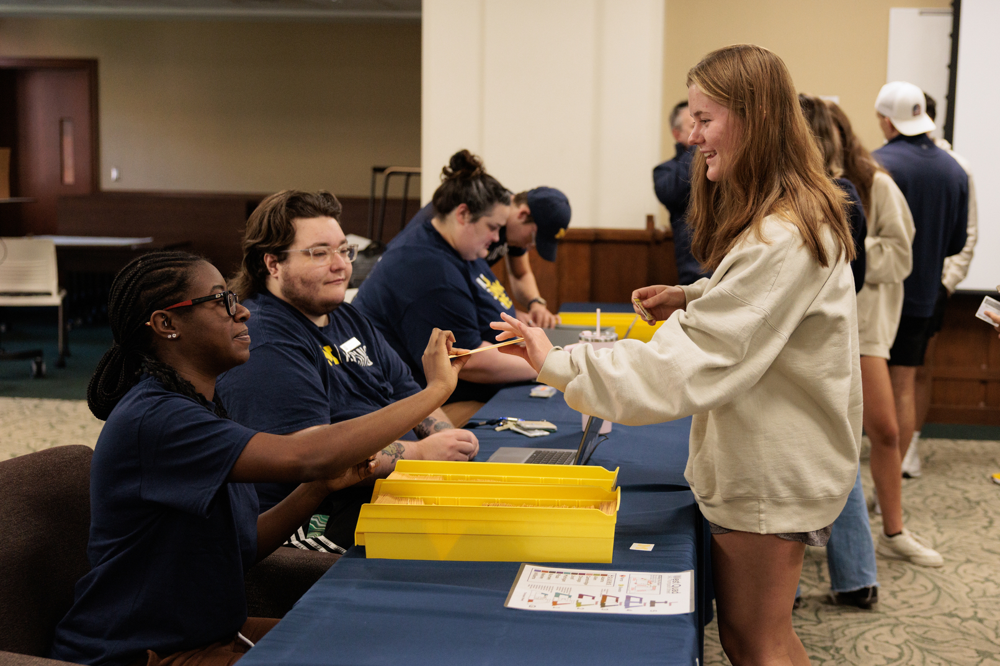

First Generation Students at Michigan
Blazing trails and breaking barriers
Being the first in your family to attend college is a remarkable achievement. At the University of Michigan, we're committed to supporting your journey with dedicated resources, mentorship, and a strong community of fellow first-gen students.
20%
of UMich students are First Gen
1000+
First Gen graduates annually
Academic and Personal Support

The University of Michigan offers numerous support services to help you excel in your studies and maintain a healthy work-life balance. From tutoring programs to mental health resources, we encourage you to take advantage of the following:
- Academic Advising: Meet with advisors who understand the specific needs of first-generation students and can help you plan your academic journey. Schedule an appointment with Academic Advising.
- Mental Health Services: Access confidential counseling, support groups, and workshops that address the unique stresses faced by first-gen students. Visit CAPS for more details.
- Financial Aid Assistance: Connect with financial advisors who can guide you through scholarships, loans, and other funding opportunities available specifically for first-gen students. Explore options on the Financial Aid website.
First Gen Mentorship Program

Our mentorship program pairs first-generation students with faculty and staff who were also first-generation college students. This connection allows you to gain insights and advice from someone who has been in your shoes, while also providing guidance on everything from time management to finding internships.
In addition to one-on-one mentorship, the program offers group events, such as:
- Networking Nights – Meet other first-gen students and share experiences.
- Career Panels – Learn from first-gen alumni working in various industries.
- Social Gatherings – Connect with peers and build friendships in a supportive environment.
Study Tips for First Gen Students

As a first-generation student, navigating study techniques that work best for you is essential. Below are some study tips shared by other first-gen students who have successfully adapted to the college academic environment:
- Set Realistic Goals: Break down your study sessions into achievable goals to avoid feeling overwhelmed.
- Create a Study Schedule: Consistency is key! Designate specific times for studying each day and stick to the plan.
- Find Your Ideal Study Environment: Experiment with different locations on campus until you find one where you can focus best.
- Form Study Groups: Collaborating with classmates can help you better understand the material and keep you motivated.
Success Stories

At the University of Michigan, many first-gen students have gone on to achieve great things, both academically and beyond. Here are a few stories from those who have excelled:
"I came to UMich not knowing what to expect. The First Gen Support Network connected me with mentors and resources that allowed me to thrive academically and personally." – Emily T.
"The mentorship program has been a game-changer for me. My mentor provided guidance and helped me navigate the challenges of college life." – Marcus K.
"Being a first-gen student at UMich has been a rewarding experience. I've been able to build a community of supportive friends and faculty who encourage my growth." – Sarah L.